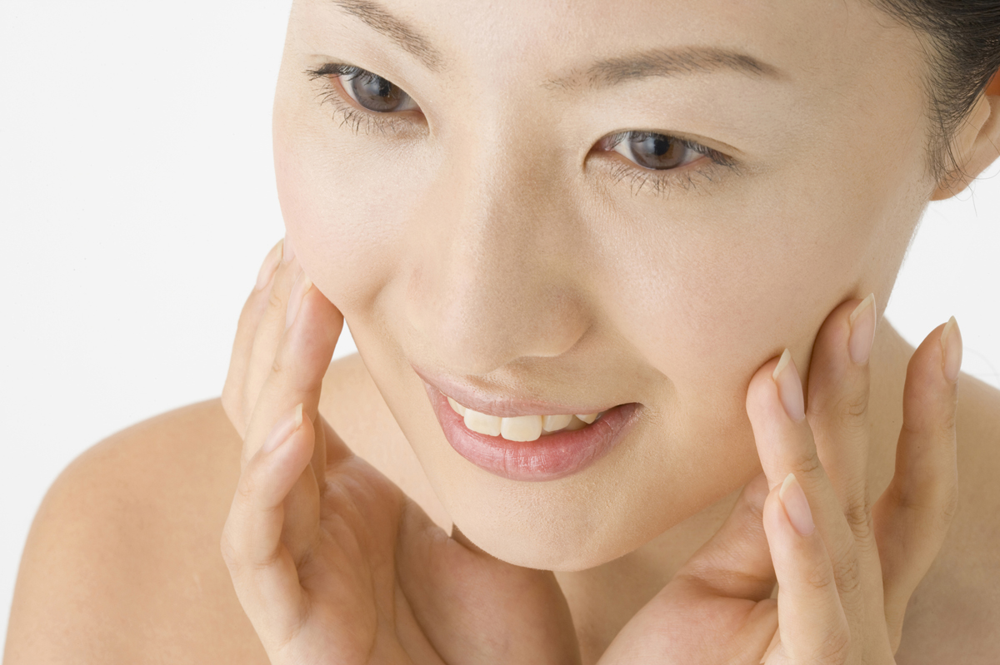

理想の
「透明美肌」を
あなたに
アクシードミネラル美容クリームtype3
- アクシード ミネラル美容クリームtype3は、あなたに透明感のある潤いなめらか美白効果をもたらします。
- 15種類以上のミネラルや美容成分を配合し、敏感肌の方でも安心して使えるアルコール無添加処方です。さらに、無香料、無着色でお肌に余計な負担を与えません。
- 化粧下地、乳液、美容液、化粧水をこれひとつでカバーできる理想のオールインワン美容クリームです
- ベトつかないのに、しっとりした潤いたっぷりのお肌に大変身。もう乾燥はこわくありません。保湿効果抜群の商品です。
- たっぷりサイズの100gを、うれしいお手頃価格でご提供。
- シンプルで残量が分かりやすい透明ケース入り。
- シリーズ累計10,000個販売。脅威のリピート率80%以上。
| 名称 | アクシード ミネラル美容クリーム type3 |
|---|---|
| 内容量 | 100g |
| 成分 | コメ発酵液、水、ワセリン、BG、ミリスチン酸ミレス-3、グリセリン、セテアリルアルコール、セテアレス-20、 酢酸トコフェロール、ジメチコン、乳酸 Na、PCA- Na、カルボマー、水酸化 Na、ベンジルアルコール、 メチルパラベン、プロピルパラベン |
| 価格 | \4,850（税込） |
お客様の声
| スベスベになってビックリ |
|---|
| GK さん 大阪府 40 歳 女性 |
| すごい、びっくり！オールインワンクリームって使うの始めてだったのでつけた時はさっぱりしていてイマイチかなと 思ったのですが、次の日の朝しっとりしていてスベスベになっていたのでびっくりしました。量も多いのでケチケチしないでつける事ができるので助かっています。 |
| しっとりうるおって大丈夫 |
|---|
| TY さん 神奈川県 36 歳 |
| 2個目を購入しました。脂性肌なのに乾燥肌で、冬の乾燥には困っていました。乳液などのクリーム類をつけると、肌荒れをすぐにおこしていたのですが、つけないとカサカサで…。でもこの美容クリームはしっとりうるおって、大丈夫でした。これからも宜しくお願いします。 |
| ついつい肌を触ってしまいます |
|---|
| MR さん 埼玉県 28 歳 女性 |
| 肌がとても潤って、ついつい肌を触ってしまいます。他社の美容クリームで失敗して、もうクリームは使わないと、心に決めていたのにこれに出会って、気持ちが変わってしまいました。 |
| くすみがなくなり、乾燥知らずに |
|---|
| NS さん 東京都 33 歳 女性 |
| ミネラル美容クリームはもう9ヶ月目になります。母にもプレゼントして今年の肌は乾燥知らずでした。肌のくすみがなくなり友人に何を使っているの？とよく聞かれて、教えてあげています。友人もミネラル美容クリームのとりこです。 |
透明美肌で肌ケア
10月限定キャンペーン
20%OFF&携帯クリームプレゼント!
10月1日~31日の期間に購入された方に以下の特典
- ・\4,850→\3,880(20%OFF)
- ・お出かけに便利な携帯用クリームをもれなくプレゼント
- この機会をお見逃しなく!!!
ご使用方法
朝晩の洗顔後、適量を手に取り顔全体にたっぷりとなじませてください。化粧下地としてご使用される場合は、クリーム がお肌になじんでさらっとしてからメイクをしてください。目安として、10分以上お待ちいただくと、クリームがお肌にしっかりなじみます。

よくある質問
- 化粧下地として使った場合、ファンデーションを塗ると消しゴムのカスのようなものが出てくるのですが、ファンデーションとの相性が悪いのでしょうか？
- 化粧下地としてお使いいただく場合は、薄めにのばして10分ほどお待ちいただき、お肌にしっかりとなじませてから、メイクアップをはじめるといいでしょう。すぐにメイクアップをしてしまいますと、カスが出てしまうこともございます。
- UVカットはできますか？
- UVを直接抑制する効果はございません。ただ、「ミネラル美容クリーム」によってお肌が健康になると、皮脂が正常に分泌されるようになり、その皮脂が紫外線から守ってくれます。直射日光を浴びる場合は必ずUVカット商品をお使いください。
- >すぐにきれいな肌になりますか？
- 個人差がございますので一概にはいえません。お肌の健康は毎日のスキンケアに加えて生活リズムや食生活にも左右されます。お使いいただく方によって様々な過程を経るでしょう。気長にお使いいただくことによって理想の状態に近づいていきます。
- 敏感肌なのですが使えますか？
- 「ミネラル美容クリームtype3」は刺激が少なく、敏感肌の方にも喜んでお使いいただいております。特に気になる場合はパッチテストなどを行ってからご使用ください。合わないと感じられた場合は使用を中止し専門医にご相談ください。